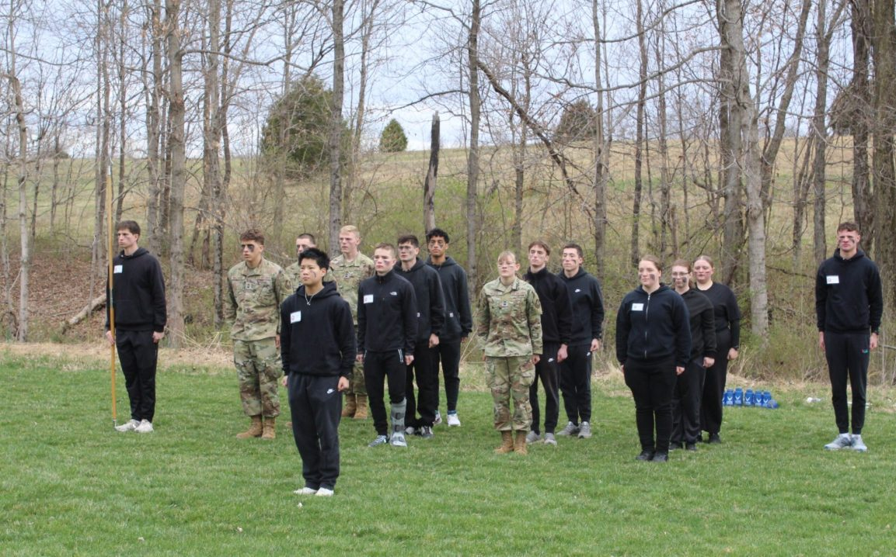
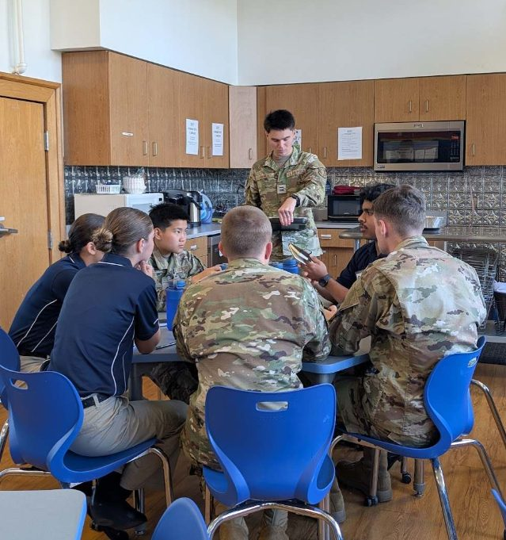
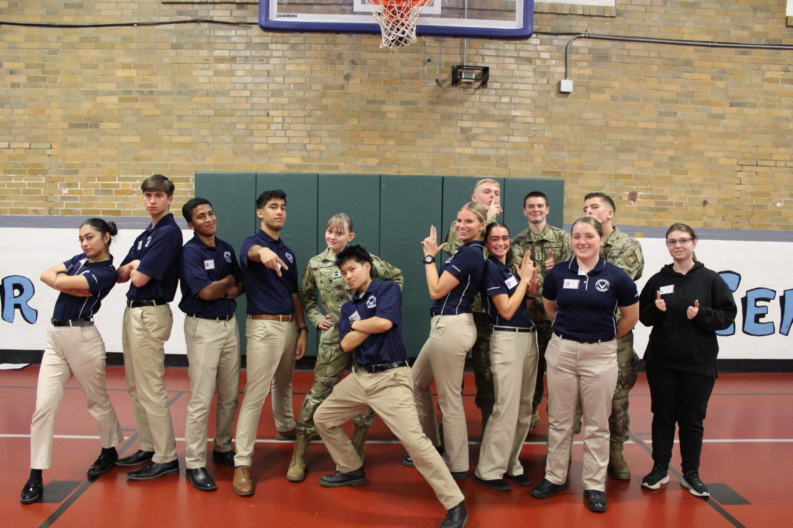

EXPERIENCE / EDUCATION
BUILT WITH
OTHER PEOPLE.
Teamwork, leadership, and working with people are as much a part of the story as the circuits.
EXPERIENCE.
2026 — PRESENT
Purdue Space Program
Rocket design, OpenRocket stability studies, CAD, prototyping, and shared design reviews.
2024 — 2025
Air Force ROTC · Detachment 215
Leadership and followership training, including an opportunity to serve as flight commander.
2024 — 2025
Whole Foods Market
Cashier · Ranked #1 in items processed per minute and averaged 44% above store-wide processing speed.
2022 — 2023
Olive Garden
Host and food runner · Coordinated floor operations and supported teammates during busy service.
LIFE IN ROTC
LEADERSHIP & TEAMWORK.



